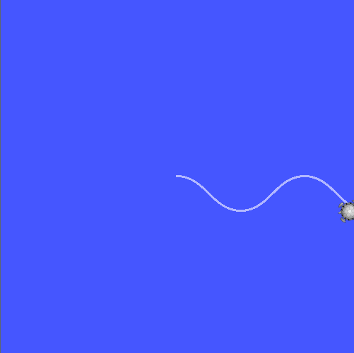

The most important thing for becoming a new member on this team isn't prior ability. You don't have to have to be a coding wizard! What we're looking for is people who are persistent, who, when presented with a problem in a subject area they might not understand, work through it, learning as needed. The challenges have been created accordingly. With enough perserverence, you should be able to complete them with only basic programming experience.
This challenge is for people who'd like to join our software team. Before you go through it, you might want to make sure we're recruiting here. But even if we're not, feel to complete it and email us, we might be recruiting again at the start of second semester!
All of our development is done on Linux, more specifically Ubuntu. So, your first challenge is to get Ubuntu and our software stack up and running. We've written some instructions to help you along, which can be found in our github repository, under Installation and Setup.
Note: If you can complete the challenges through something other then a native Ubuntu install, such as through a VM or other Linux distro, that's fine too, but we're not going to offer any help getting non-native Ubuntu setup's running
OK, for this challenge, you'll need some pretty advanced mathematical skills. We're talking basic knowledge of what a sine function is... and that's about it. Seriousy though, you don't need to know any advanced maths to join this team. Like I said in the intro, we're looking for people willing to learn. As such, your challange is to have turtlesim draw out a sine wave. Since the build system for ROS can be kinda complicated (I still don't understand it), we've provided you most of the framework for what you'll need. In ~/IGVC-2017/src/challenge/src/solution.cpp you'll find a skeleton project, with a main function and a while loop, alongside a bunch of resources down below. You don't have to use this skeleton project, but we'd recommend it. You should be aiming for a final result that looks something like this:
Note: Please don't just use the keyboard controls to draw this. Yes. We thought of that. As pretty as I'm sure yours is, we're more concerned with your code!
Note: you can also write your solution in python get started here, but the resources below are C++ focused, and that's the language we'd prefer
We'd suggest you start by understanding how ROS works here, then walking through the ROS Tutorials (at least all of section 1.1) (some commands are different across ROS versions. We're using ROS Kinetic, which is the latest). We've done a lot of this stuff already, but it's important that you at least understand it. In particular, #5-6, #11, and #13 are important for this challenge. After that, you should be pretty much ready to start! While you're working, we'd suggest you have the turtlesim reference open (mostly for 2.1.1 and 2.1.2). It also contains some video tutorials, which may be of use. Make sure to take a look at the references for geometry_msgs/Twist (What you'll be sending turtlebot) and turtlesim/Pose (what turtlesim will be sending you). You might however, not have to use the turtlesim/Pose, as there are several ways to solve this problem.
The title sums this one up pretty nicely. You don't have to do this challenge, if you've gotten to this point, you've already done pretty well. But we kinda figured it'd be interesting to see what people come up with. Please don't just copy something from the tutorials, but feel to free to extend the tutorials or even the above challenge.
This one's a fair bit harder, then the previous ones, so don't worry if you don't get it. For this, we want you to re-write the Challenge package into the non-simple configuration specified in the README (the one with testing) and write (and run) some unit tests for your solution!
Great! If you've already booked an interview, bring your solution for us to see, if not, please check this page to see if we're currently recruiting for software!